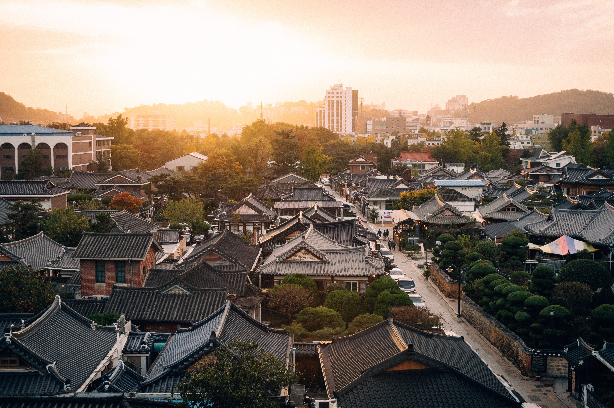

신라의 역사는 지금으로부터 2,100여 년 전인 기원전 57년, 한반도 동쪽에 자리한 사로국에서 시작되었어요. 박혁거세가 세운 신라는 작은 국가였어요. 4세기 후반, 신라의 제17대 왕인 내물왕이 주변 소국을 정복한 뒤 왕권을 강화했어요. 이때부터 신라는 강력한 왕권을 바탕으로 한 힘 있는 나라로 성장했지요. 6세기 후반, 제24대 왕인 진흥왕 때에는 강한 군사력으로 한강 주변 지역을 차지하고 고구려를 공격하는 등 삼국 통일의 기반을 다졌어요. 그러다가 마침내 7세기 후반, 제30대 왕인 문무왕이 백제와 고구려를 멸망시키고 삼국 통일을 이루었지요.
통일 후 신라는 정치, 경제, 문화가 더욱 발달했어요. 불국사, 석굴암과 같은 귀중한 문화유산도 이 시기에 탄생했지요. 지리적으로 가까운 당나라와 왜뿐만 아니라 멀리 아라비아 상인들과도 교류1)했어요.